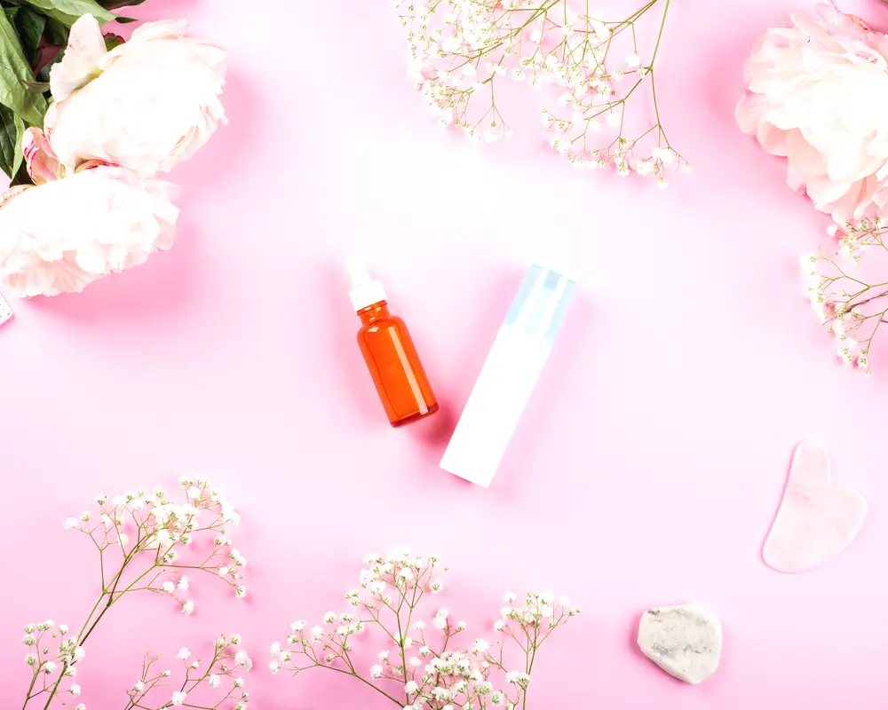

Treatments and Breastfeeding: A Plain Guide
If you are breastfeeding, most med spa treatments need to wait until you are done. That is the honest answer. We do not have good data on how things like injectables or lasers affect breast milk, so providers play it safe. It is not that these treatments are proven harmful, it is that they have not been proven safe in this setting. A careful provider will almost always tell you to hold off.

This stage of life comes with big hormone shifts, and your skin often shows it. Melasma, breakouts, rough texture, all of that is common. Wanting help is normal. But the rule most good providers follow is simple: if we do not know for sure, we skip it. That protects you, your baby, and also keeps the provider within safe practice.
Why the Pause is Standard Practice
The main concern with any cosmetic procedure is absorption. Anything you put on or in your body can enter your bloodstream. From there, tiny amounts could, in theory, pass into breast milk. For many treatments this risk is probably low, but no one can say how low. There are no formal studies in nursing patients, so the default is caution.
From the provider's side, it is straightforward. No cosmetic result is worth even a small unknown risk to a baby. Product manufacturers often state that their formulas have not been tested on pregnant or breastfeeding women. If someone still goes ahead, they are working outside usual guidelines, which is not what you want.
So when a clinic says, "Let's wait," take that as a good sign. It means they are putting safety first.
Treatments to Skip for Now
Some treatments are a clear no while you are breastfeeding. No gray area here. If someone offers these, that is a red flag.
First, injectables. That includes all neurotoxins like Botox, Dysport, and Xeomin, and all dermal fillers like Juvederm and Restylane. These are injected into your body. Even though doses are small and meant to stay where they are placed, we have zero solid information about how they relate to breast milk. So the answer is no during this time.
Next, aggressive procedures. Deep chemical peels, strong ablative lasers, and any treatment that needs a big healing window fall into this group. These work by creating a controlled injury so your skin repairs and makes more collagen. Your body has an inflammatory and healing response, and there is also whatever is used to numb the area. Strong topical numbing creams are real drugs and do absorb into your system. It is not worth it while you are nursing.
What Might Be Safe
There are a few gentler, topical treatments that might be okay, but this is not a decision your med spa should make alone. You need a clear yes from your own doctor. Do not book anything without checking with your pediatrician or OB-GYN first. Everyone's medical situation is different, so they have the final say.
The rule is simple: when in doubt, the answer is no. A good provider will agree.
Some treatments that land in the maybe zone include:
Dermaplaning: This is a manual exfoliation using a sterile blade to lift off dead skin and peach fuzz. There are no active chemicals involved, which is why it is one of the options doctors are more likely to allow.
Hydrating facials: A very basic facial with gentle, clean products might be fine. The catch is ingredients. You need to know exactly what is going on your skin. Plenty of products, even "natural" ones, are not okay during breastfeeding.
LED therapy: This uses controlled light to work on different skin issues. It is noninvasive and does not rely on chemicals, so many providers view it as low risk. Still, your doctor needs to sign off.
Focus on Your Home Routine
Pressing pause on pro treatments does not mean giving up on your skin. This is actually a good window to dial in a simple home routine. You still have to be picky about ingredients, though. Retinoids are out. Bring your products to your doctor if you are unsure.
A safe routine is usually very basic. Think gentle cleanser, plain hydrating serum, solid moisturizer, and a mineral sunscreen. Sunscreen matters a lot right now. Hormones during and after pregnancy can make dark spots and patches more likely, and daily SPF is your best protection.
Protecting your skin from the sun helps both how it looks and how healthy it stays over time. For clear, practical info on sun safety, the Skin Cancer Foundation has good guidance. During breastfeeding, many providers like physical, or mineral, sunscreens with zinc oxide or titanium dioxide.
Planning for Later
Waiting does not mean you have to put your plans on hold in your head. If you are curious about future treatments, you can still book a consultation. You can talk through your skin goals, get a sense of what might work for you, and sketch out a plan for when you are done nursing.
This can be a nice time to get informed. You can figure out what you might want to try once your doctor clears you. You can also ask whether med spa bundles make sense for what you have in mind later. It can help you feel prepared and gives you something to look forward to.
This waiting period is temporary. When your doctor gives the green light, you can go back to your usual treatments or try something new. For now, the goal is simple: keep things safe for you and your baby. The med spa will still be there when you are ready.